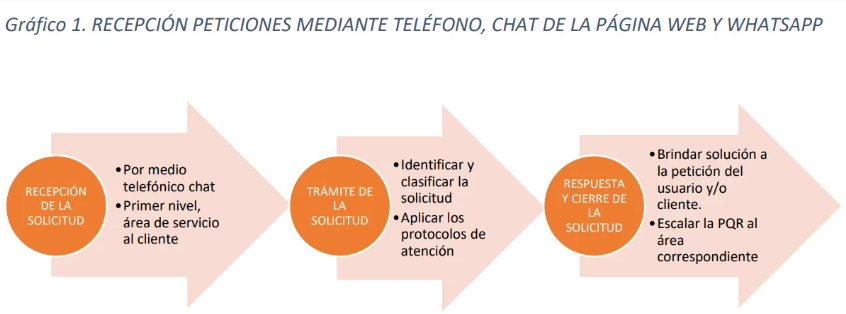
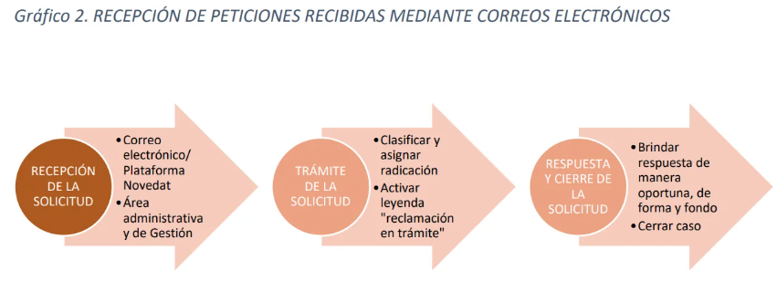

Procedimiento para el tratamiento de Peticiones, Quejas y Reclamos
Aló Credit Colombia S.A.S. es una sociedad dedicada a otorgar créditos de consumo para la compra de terminales y equipos móviles, operando a nivel nacional mediante convenios con aliados comerciales. Esta guía describe el proceso para recibir y tramitar todas las solicitudes de clientes, usuarios y entidades de control.
Nuestra entidad se encuentra vigilada por la Superintendencia de Industria y Comercio, por lo que estamos obligados a atender de manera oportuna y eficaz las peticiones, solicitudes y demás requerimientos interpuestos por nuestros clientes y usuarios.
El presente documento tiene como finalidad establecer los lineamientos para la recepción y trámite de Peticiones, Quejas, Reclamos, Denuncias, Sugerencias o Felicitaciones dirigidas a Aló Credit Colombia S.A.S. por parte de los clientes, usuarios y las entidades judiciales de control y vigilancia nacionales.
Para comprender mejor los procedimientos a aplicar, a continuación se exponen las definiciones de los términos que se tratarán en el presente documento.

Normatividad
- Artículo 23 - Constitución Política de Colombia: El Derecho Fundamental de Petición tiene origen constitucional. Define que toda persona puede presentar peticiones respetuosas a las autoridades por motivos de interés general o particular y obtener pronta resolución. El legislador podrá reglamentar su ejercicio ante organizaciones privadas para garantizar los derechos fundamentales.
- Artículo 13 - Ley 1755 de 2015: Toda persona puede presentar peticiones respetuosas a las autoridades y obtener pronta resolución completa y de fondo. Mediante este derecho se podrá solicitar, entre otros, el reconocimiento de un derecho, la intervención de una entidad o funcionario, la resolución de una situación jurídica, la prestación de un servicio, requerir información o formular quejas, denuncias y reclamos. El ejercicio del derecho de petición es gratuito y no requiere representación a través de abogado ni de persona mayor cuando se trate de menores relacionados con entidades dedicadas a su protección o formación.
- Artículo 14 - Ley 1755 de 2015: Salvo norma especial, toda petición deberá resolverse dentro de los quince (15) días siguientes a su recepción. Las peticiones de documentos e información se resolverán dentro de los diez (10) días siguientes. Las consultas efectuadas ante las autoridades deberán resolverse dentro de los treinta (30) días siguientes. Si no es posible cumplir estos términos, se informará al interesado antes del vencimiento, explicando los motivos de la demora y el nuevo plazo, que no podrá exceder el doble del inicialmente previsto.
- Artículo 15 - Ley 1755 de 2015: Las peticiones podrán presentarse verbalmente o por escrito mediante cualquier medio idóneo. En caso de faltar documentos, la autoridad debe indicarlo en el acto de recibo. Si el peticionario insiste en radicar la solicitud, se dejará constancia de los requisitos faltantes.
- Artículo 17 - Ley 1755 de 2015: Si una petición radicada está incompleta, la autoridad requerirá al peticionario dentro de los diez (10) días siguientes para que complete la información en un término máximo de un (1) mes. Si no se aporta la información, se entenderá que el peticionario ha desistido, salvo que solicite prórroga antes de vencer el plazo.
- Artículo 18 - Ley 1755 de 2015: Los interesados pueden desistir en cualquier momento de sus peticiones. Las autoridades podrán continuar de oficio la actuación si es necesaria por razones de interés público.
- Artículo 19 - Ley 1755 de 2015: Toda petición debe ser respetuosa. Las peticiones incomprensibles se devolverán para corrección dentro de los diez (10) días siguientes. Las peticiones reiterativas ya resueltas podrán responderse remitiendo a respuestas anteriores, salvo que se trate de derechos imprescriptibles.
Procedimiento para la atención de peticiones
Teniendo en cuenta la clasificación de las PQRS, se establece la tipología para su manejo y gestión, así como el tiempo definido para la generación y comunicación de la respectiva respuesta, según lo dispuesto por la ley. El sistema de información de Aló Credit permite registrar el tipo, la solicitud y la categoría de cada PQRS para asegurar una clasificación adecuada.
Atención de PQRS primer nivel: Si el cliente o usuario se comunica por la línea de atención, chat web o WhatsApp (+57 3243679591), debe brindar su número de identificación, nombre completo, número de contrato (si aplica) y el motivo de la solicitud. El analista evaluará los hechos y clasificará la solicitud con el fin de brindar una solución inmediata o, en su defecto, escalarla a la coordinación de servicio al cliente.

Atención de PQRS vía correo electrónico: Una vez recibida la petición, el analista asignará un número de radicación interno, verificará la completitud de la solicitud y requerirá los documentos faltantes si aplica. La respuesta al cliente se enviará dentro de los tiempos establecidos utilizando el medio de contacto suministrado.
A continuación se relacionan las categorías de peticiones, el tiempo máximo de respuesta, el área responsable y la clasificación aplicable para cada solicitud.

Procedimientos de consultas y reclamos (Ley de Habeas Data)
Los titulares de datos personales pueden ejercer sus derechos a conocer, actualizar, rectificar y suprimir información, así como revocar autorizaciones. Los procedimientos aplicables son:
Procedimiento de consulta: El responsable suministrará la información vinculada con el titular en un término máximo de diez (10) días hábiles contados desde la recepción de la solicitud. Si no es posible atender la consulta en ese plazo, se informará al interesado explicando los motivos y la fecha en que se atenderá, la cual no podrá superar los cinco (5) días hábiles siguientes al vencimiento del primer término.
Procedimiento de reclamo: El titular que considere que la información debe ser corregida, actualizada o suprimida, o advierta el incumplimiento de los deberes establecidos en la Ley 1581 de 2012, podrá presentar un reclamo que será tramitado bajo las siguientes reglas:
- El reclamo debe incluir identificación del titular, descripción de los hechos y dirección de contacto.
- Si el reclamo está incompleto, se requerirá subsanar las fallas en un plazo de cinco (5) días.
- Si quien recibe el reclamo no es competente, lo trasladará a la entidad correspondiente en un término máximo de dos (2) días hábiles.
- Al recibir el reclamo completo, se incluirá en la base de datos la leyenda "reclamo en trámite" hasta su resolución.
- El término máximo para resolver el reclamo es de quince (15) días hábiles contados a partir del día siguiente al recibo.
Lineamientos adicionales
Cuando no sea posible resolver la petición en los plazos señalados, se informará al peticionario antes del vencimiento, explicando los motivos de la demora y el plazo estimado para la respuesta definitiva, el cual no podrá exceder el doble del inicialmente previsto.
Toda respuesta debe ser gestionada de forma oportuna y de fondo, evitando incongruencias o reprocesos. Las solicitudes que requieran rectificaciones en centrales de riesgo deben ser registradas de inmediato con la leyenda "reclamación en trámite".
Si la petición es reiterativa y ya fue resuelta, se podrá remitir a la respuesta anterior. El analista debe responder cada punto planteado por el cliente con claridad y precisión, en línea con los principios de igualdad, celeridad, debido proceso, transparencia y subsanación.
La respuesta al cliente se expedirá por el medio establecido por este. Las comunicaciones por correo electrónico se enviarán automáticamente al momento de la firma. Para envíos físicos, se delegará el radicado al área de correspondencia.
Medios habilitados para peticiones y consultas
Aló Credit ha dispuesto los siguientes canales para la recepción y atención de peticiones y consultas:
- Comunicación dirigida a Aló Credit: Avenida carrera 7 # 32-29 Piso 9 Bogotá D.C.
- Correo electrónico: pqr@alocredit.co
- Notificaciones judiciales: legal@alocredit.co
- Chat página web: https://www.alocredit.co/
Cordialmente,
ALÓ CREDIT COLOMBIA S.A.S.